Install Cloud Pak for Data on IBM Cloud Satellite
Kevin Collins ( kevincollins@us.ibm.com )
Kunal Malhotra ( kunal.malhotra3@ibm.com )
1 - Introduction
In this section, we will be provisioning Cloud Pak for Data on our satellite location. One of the most important parts of Cloud Pak for Data is the storage that you will use in your cluster. To get the best performance for Cloud Pak for Data we will be creating Block storage in our VPC and then use Portworx Software Defined Storage, provisioned from the IBM Cloud Catalog, to handle the storage needs for Cloud Pak for Data.
By default, when you create an IBM Cloud Managed OpenShift cluster on a Satellite location, the internal image registry is create using emptyDir. This means that images in your cluster will be stored locally on the image registry pod itself. If the pod goes down, you will lose your images. The reason this is initially created like this is to give you flexibility to use the backing of your choice for your image registry. With your satellite location being on prem, at the edge, or maybe a third-party cloud provider there are many options you can choose from meeting your business requirements. A great choice to use for an image registry is IBM Cloud Object Storage which we will setup to use as our image registry backing.
2 - Image Registry
When you install Cloud Pak for Data, the installer is going to copy the images Cloud Pak for Data will use to your local image registry. This is done to greatly improve the speed of the installation process. The first thing we are going to do is create an IBM Cloud Object Storage instance and bucket. Note: if you already have an instance of IBM Cloud Object Storage you can skip to section 2.2
2.1 Provision IBM Cloud Object Storage
To provision IBM Cloud Object Storage, from the cloud.ibm.com portal, click on Catalog, search for Object Storage and then click on the Object Storage tile.
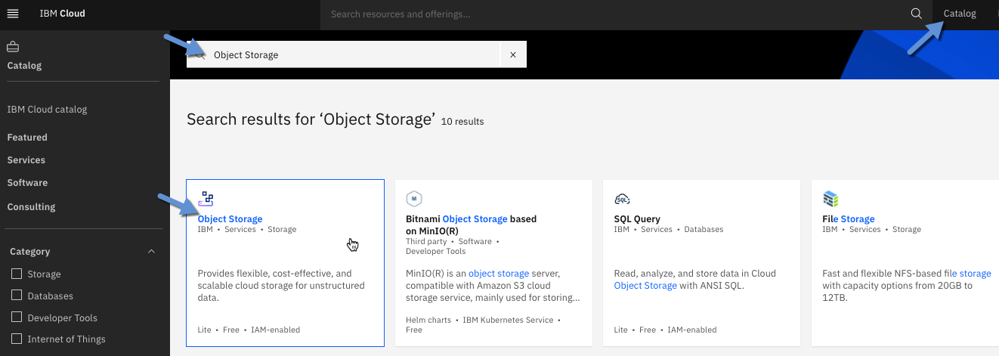
On the next screen, you will want to give the instance of IBM Cloud Object Storage a meaningful name, I will use Cloud Object Storage-Satellite and choose the resource group where your satellite resources are to location to keep things organized.
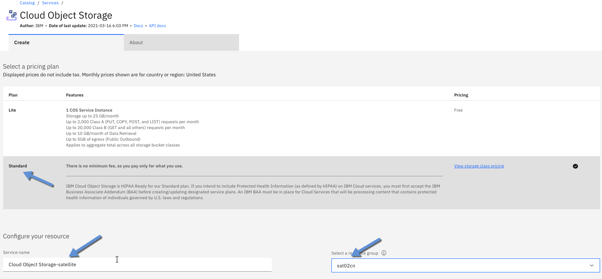
2.2 Create a Bucket for your Image Repository
The next thing we need to do, is create a bucket for our image registry. This bucket needs to have a couple specific settings so please make sure to closely follow the guide here.
From your cloud object storage instance, click on Buckets and then Create bucket.
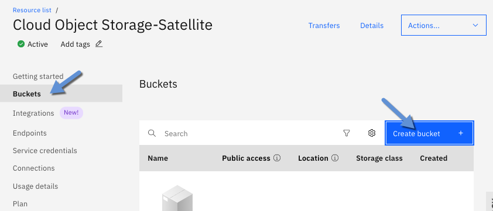
Next, click on Customize your bucket:
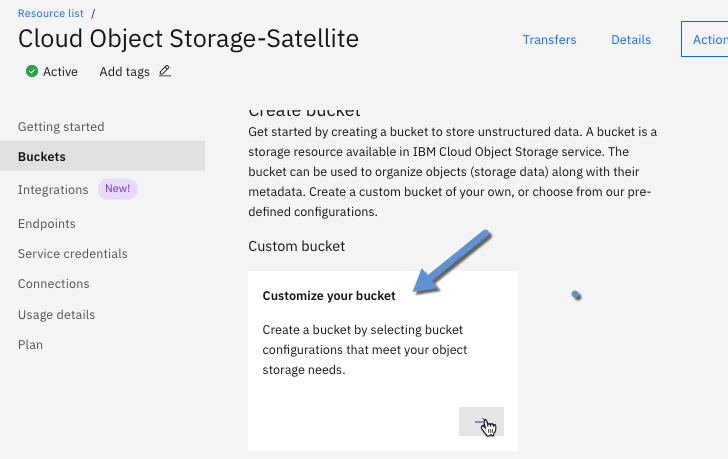
On the next screen, name your bucket something meaningful, I will use sat-cluster-image-registry-kmc. Note: the name of your bucket must be unique in the region where you are creating it, so you may want to use your initials like I have.
Select Regional for resiliency, Location: us-east and then standard as the storage class. Note: With the exception of location, this should be whatever region is closest to your satellite location, it is important to select the values exactly as indicated. After entering these settings, click on Create Bucket.
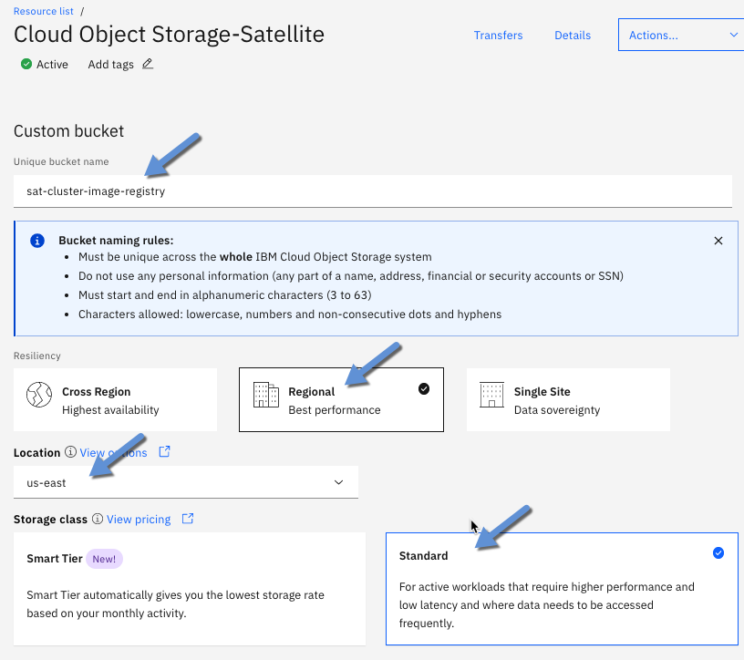
Now that we have created a bucket, the next step is to create Service Credentials so that our OpenShift cluster can talk to our instance of Cloud Object Storage to read and write images to the bucket we created.
On the left-hand navigation pane, select Service Credentials and then click on New Credential. 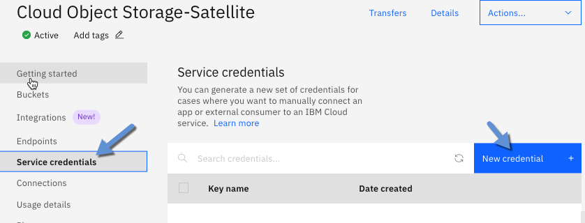
On the next screen, give your credentials a meaningful name, I will choose Service-credentials-satellite-registry, role should be Write and turn on HMAC.
On the next screen, note down the apikey for the Cloud Object Storage Instance, the Access Key and the Secret Access Key. Make sure not to share this with anyone ... by the time anyone reads these I will have deleted these keys.
2.3 Configure OpenShift to use Object Storage for the Image Registry
Next, we need to create a secret for our image registry to talk to Cloud Object Storage. Start your terminal, log into IBM Cloud and your cluster.
ibmcloud login --apikey=
ibmcloud ks cluster config --cluster
Change the following command to use
oc create secret generic image-registry-private-configuration-user
--from-literal=REGISTRY_STORAGE_S3_ACCESSKEY=
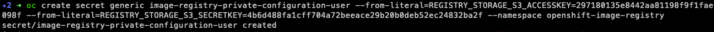 Now that we have our secret configured, we need to update the configuration of our image registry to point to the object storage instance and bucket we created.
The easiest way to do this, is through the OpenShift web console. From cloud.ibm.com navigate to your satellite cluster and then click on OpenShift web console.
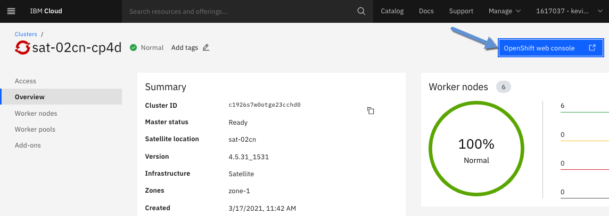
Once the OpenShift console opens, click on Search, search for 'Config' and the click on the Config -- imageregistry.operator.openshift.io...
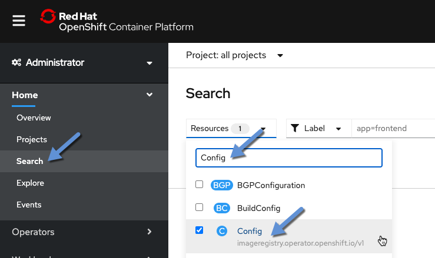
On the next screen, click on cluster.
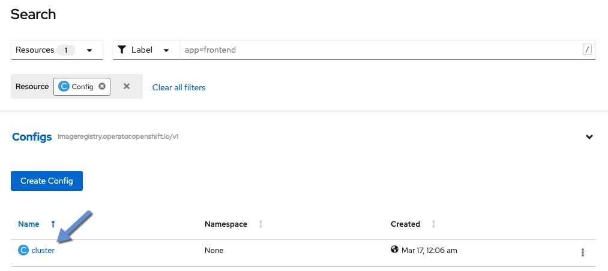
Click on YAML and then scroll down until you see this section:
managementState: Removed
proxy:
http: ''
https: ''
noProxy: ''
httpSecret: dAagViLyMeJodISdQpqcXtodpd6c6ojGyZeGEFnKTjhvpsalEs6vF33Hz5iSldS6
storage: {}
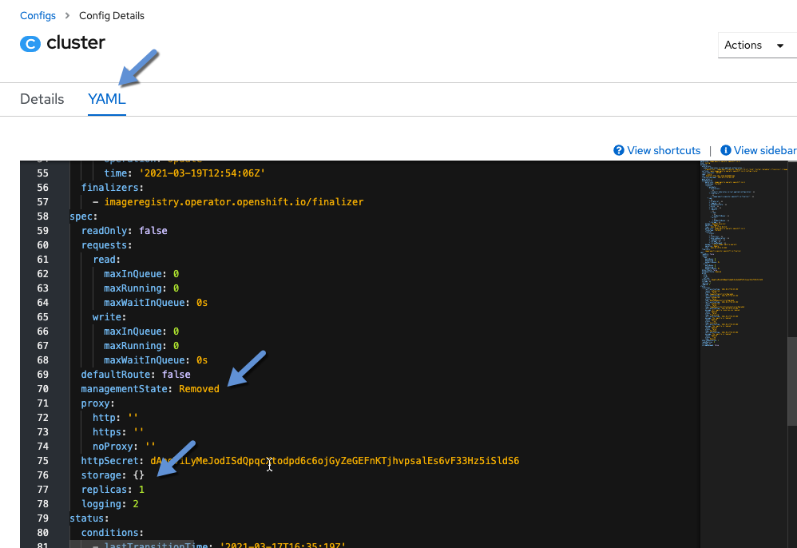
We need to make changes to the managementState and the storage lines.
*Note -- when you make these changes, you may find you get a warning that object changed and you will need to reload it before you can make changes. You may need to try these a couple of times. One tip I found is change the managementState first and then go back and change storage.
What you will need to do, is change managementState to Managed:
managementState: Managed
and under storage enter the following with your bucket name:
storage:
s3:
bucket: sat-cluster-image-registry-kmc
region: us-east-standard
regionEndpoint: 'https://s3.us-east.cloud-object-storage.appdomain.cloud'
virtualHostedStyle: false
After entering these settings, click Save and then Reload. You should see the YAML has been updated with the settings you entered.
If you switch to the details page and scroll down, you should see a message that the S3 bucket exists:
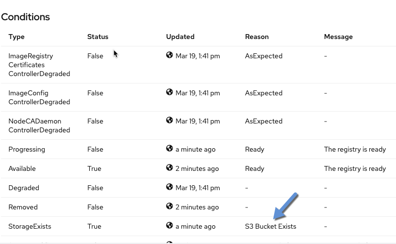
If you don't see this verify you entered your object storage secrets correctly and try to edit the config yaml again. If it fails again, delete the config and start over. When you delete the config, a new one will top up a couple of seconds later.
One additional check we can do to make sure the image registry really is configured, is looking at the image registry pod.
To find out if the registry is running as it should, click on Workload and the Pods. Under project, search for and select openshift-image-registry and click on the image-registry pod.
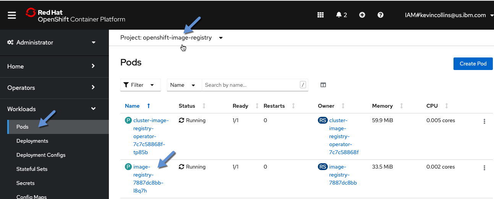
On the next screen, click on the Environment tab make sure you see that your object storage is indicated. If you don't see object storage values like below, then try updating the config again.
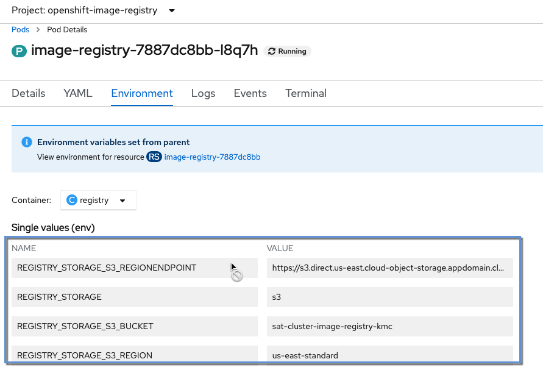
3 -- Configure Storage
3.1 Provision Block Storage
Not surprisingly from the name, Cloud Pak for Data requires storage to store data to perform analytics among other things. With our cluster running on a Virtual Private Cloud, the best choice of storage is Block storage.
To create block storage on IBM Cloud, from the VPC, click on Storage, Block storage volumes and then click Create.
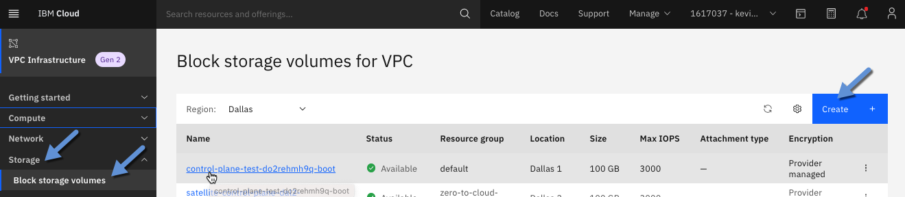
We will need to create one block storage volume for each worker node. Starting with zone 1 worker 1, enter the following settings:
Name: zone1-worker1-volume
Location: Dallas1
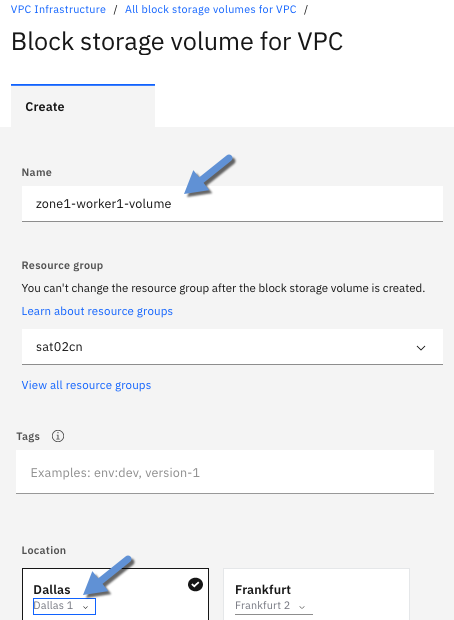
Scrolling down further, under Volume profile, select Custom and then enter 6000 for IOPS and 500 for the size.
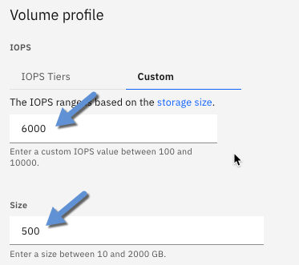
Finally, click Create Volume.
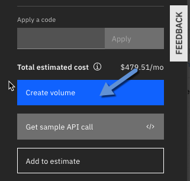
Repeat the same steps for all the other worker nodes.
As a tip: you can also create these block volumes with the CLI using the following command:
ibmcloud is volume-create zone2-worker1-vol custom us-south-2 --iops 6000 --capacity 500
3.2 Attach the Block Volumes to your instances
Now that we have block volumes created for all our worker nodes we need to attach them. To attach the block volumes, from the VPC Menu, select Virtual Server Instances.
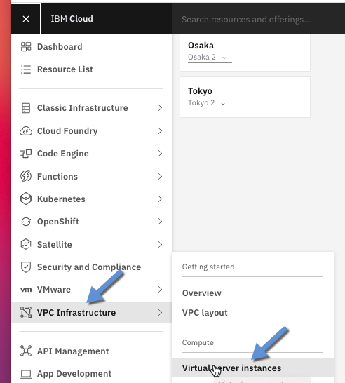
For each worker node instance, click on the name.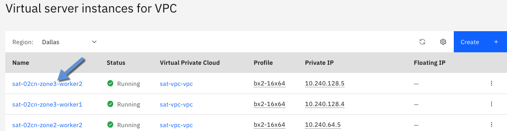
Scroll down to the Storage volumes section and click on Attach.
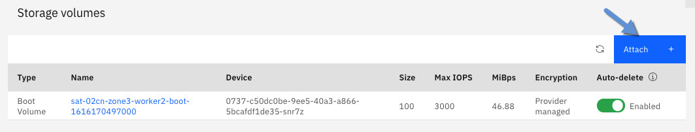
On the next screen, select the block volume for the corresponding Virtual Server Instance and click save.
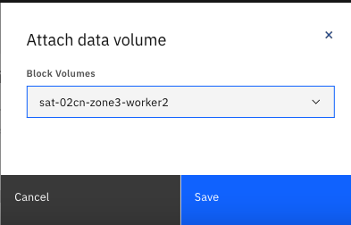
Repeat the same process for the remaining worker nodes.
3.2 Provision Portworx
The last step to prepare for Cloud Pak for Data installation is to provision an instance of portworx and since our cluster is a satellite cluster we can do this with the IBM Cloud Catalog. When you install portworx, you have two options to use for the portworx configuration. You can use either the internal kvdb that portworx provides or use an external etcd such as IBM Cloud Databases for etcd. From experience, I highly recommend to use an external etcd to use for you portworx kvdb. The reason for this is if you use the internal kvdb and you reload or replace one your worker nodes, your portworx configuration will fail. While you won't lose any data, you will have to go through a rather painful process of fixing your portworx configuration. It only takes about 5 extra minutes to setup an external etcd system and you get a piece of mind that your portworx configuration will be highly available and rock solid.
3.2.2 Provision IBM Cloud Databases for etcd
To install IBM Cloud Databases for etcd, from the cloud.ibm.com console, click on catalog, search for etcd and then click on the Databases for etcd tile.
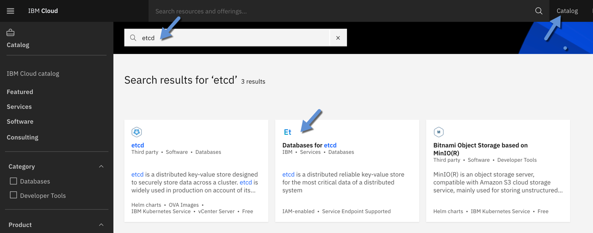
The first thing we need to do is to specify a location for our IBM Cloud databases for etcd to run. For best performance, you will want to select the location that is nearest is your satellite location.
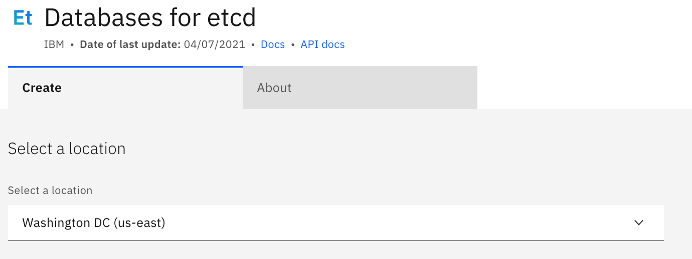
Next, we need to enter the following specific settings for etcd to support portworx.
Start by giving your etcd instance a meaningful name, I will use Databases for etcd-px-satellite and choose the same resource group your cluster is in. Next, select the following options for etcd and then click Create to create the instance of etcd.
-
Initial memory allocation: 8GB/member (24GB total)
-
Initial disk allocation: 128GB/member (384GB total)
-
Initial CPU allocation: 3 dedicated cores/member (9 cores total)
-
Database version: 3.3
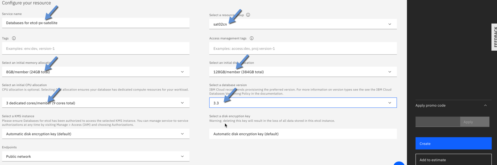
The next think we need to do is generate service credentials for etcd so that portworx can use this etcd instance.
After your instance is created it, click on it and the click on service credentials from the menu and finally click on New Credential.
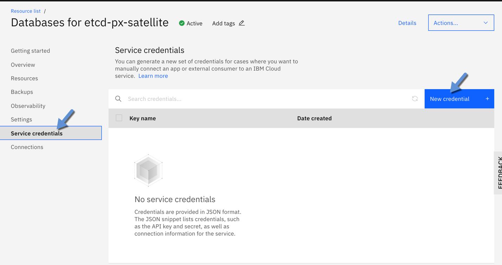{width="6.5in" height="3.43125in"}
On the next screen, give your credentials a meaningful name, I will use Service Credentials-px-etcd.
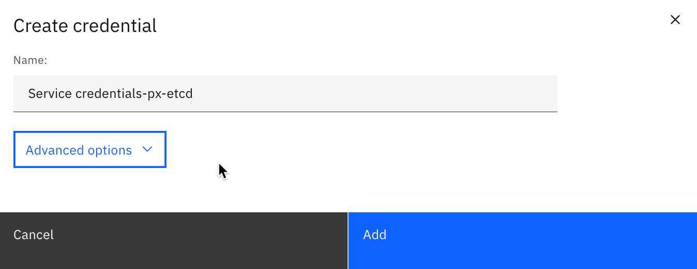
Next, we need to retrieve a couple of values from the service credentials we just created. The three values that we need to copy are:
-
certificate_base64
-
username
-
password
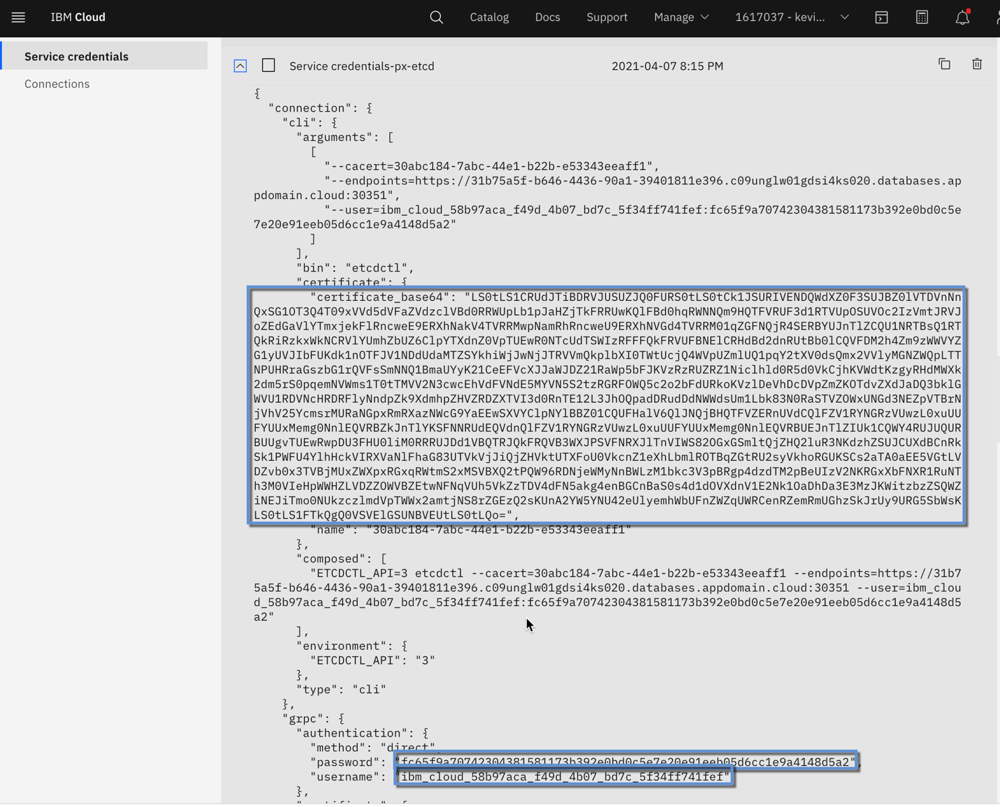
We we are going to do is create a Kubernetes secret with these values. The certificate value we can us as-is. The username and password we will need to base64 encode. To do so, start your terminal and enter the following command:
echo -n
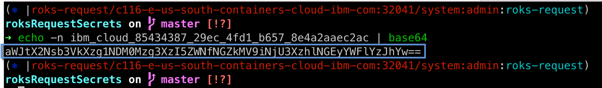
Repeat the same steps to base64 encode the password.
Now that we have the values we need, we can create a Kubernetes secret with these values.
Create a new file, I will just name it px-secrets.yaml with the values you just retrieved.
apiVersion: v1
kind: Secret
metadata:
name: px-etcd-certs
namespace: kube-system
type: Opaque
data:
ca.pem: "LS0tLS1CRUdJTiBDRVJUSUZJQ0FURS0tLS0tCk1JSUREekNDQWZlZ0F3SUJBZ0lKQU5FSDU4eTIva3pITUEwR0NTcUdTSWIzRFFFQkN3VUFNQjR4SERBYUJnTlYKQkFNTUUwbENUU0JEYkc5MVpDQkVZWFJoWW1GelpYTXdIaGNOTVRnd05qSTFNVFF5T1RBd1doY05Namd3TmpJeQpNVFF5T1RBd1dqQWVNUnd3R2dZRFZRUUREQk5KUWswZ1EyeHZkV1FnUkdGMFlXSmhjMlZ6TUlJQklqQU5CZ2txCmhraUc5dzBCQVFFRkFBT0NBUThBTUlJQkNnS0NBUUVBOGxwYVFHemNGZEdxZU1sbXFqZmZNUHBJUWhxcGQ4cUoKUHIzYklrclhKYlRjSko5dUlja1NVY0NqdzRaL3JTZzhublQxM1NDY09sKzF0bys3a2RNaVU4cU9XS2ljZVlaNQp5K3laWWZDa0dhaVpWZmF6UUJtNDV6QnRGV3YrQUIvOGhmQ1RkTkY3Vlk0c3BhQTNvQkUyYVM3T0FOTlNSWlNLCnB3eTI0SVVnVWNJTEpXK21jdlc4MFZ4K0dYUmZEOVl0dDZQUkpnQmhZdVVCcGd6dm5nbUNNR0JuK2wyS05pU2YKd2VvdllEQ0Q2Vm5nbDIrNlc5UUZBRnRXWFdnRjNpRFFENW5sL240bXJpcE1TWDZVRy9uNjY1N3U3VERkZ2t2QQoxZUtJMkZMellLcG9LQmU1cmNuck03bkhnTmMvbkNkRXM1SmVjSGIxZEh2MVFmUG02cHpJeHdJREFRQUJvMUF3ClRqQWRCZ05WSFE0RUZnUVVLMytYWm8xd3lLcytERW9ZWGJIcnV3U3BYamd3SHdZRFZSMGpCQmd3Rm9BVUszK1gKWm8xd3lLcytERW9ZWGJIcnV3U3BYamd3REFZRFZSMFRCQVV3QXdFQi96QU5CZ2txaGtpRzl3MEJBUXNGQUFPQwpBUUVBSmY1ZHZselVwcWFpeDI2cUpFdXFGRzBJUDU3UVFJNVRDUko2WHQvc3VwUkhvNjNlRHZLdzh6Ujd0bFdRCmxWNVAwTjJ4d3VTbDlacUFKdDcvay8zWmVCK25Zd1BveU8zS3ZLdkFUdW5SdmxQQm40RldWWGVhUHNHKzdmaFMKcXNlam1reW9uWXc3N0hSekdPekpINFpnOFVONm1mcGJhV1NzeWFFeHZxa25DcDlTb1RRUDNENjdBeldxYjF6WQpkb3FxZ0dJWjJueENrcDUvRlh4Ri9UTWI1NXZ0ZVRRd2ZnQnk2MGpWVmtiRjdlVk9XQ3YwS2FOSFBGNWhycWJOCmkrM1hqSjcvcGVGM3hNdlRNb3kzNURjVDNFMlplU1Zqb3VaczE1Tzkwa0kzazJkYVMyT0hKQUJXMHZTajRuTHoKK1BRenAvQjljUW1PTzhkQ2UwNDlRM29hVUE9PQotLS0tLUVORCBDRVJUSUZJQ0FURS0tLS0tCgo="
username: "aWJtX2Nsb3VkX2UzNzcxNDZlXzE1MDZfNDdhZF9hZGFjX2JiMjI0YzlhMjViYQ=="
password: "ZmQzZTljNDcwOTliM2EzOTliNDVmMGYyY2YwMGE5NTEzYjJmZTI0ZGI3NTVjODAwYjNmYw=="
The last step we need to do before we install portworx is creating the secret in our cluster.
After logging into your cluster from the command line, run:
oc create -f px-secret.yaml
3.2.3 Provision Portworx from the IBM Cloud Catalog
From the IBM Cloud console, click on Catalog, search for Portworx and then click on the Portworx Enterprise tile.
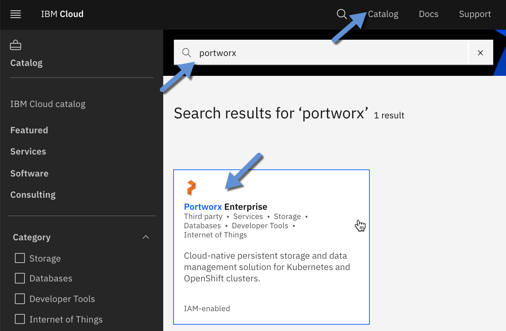
Start by selecting the region that is connected to your satellite location. I am using us-east Washington DC.
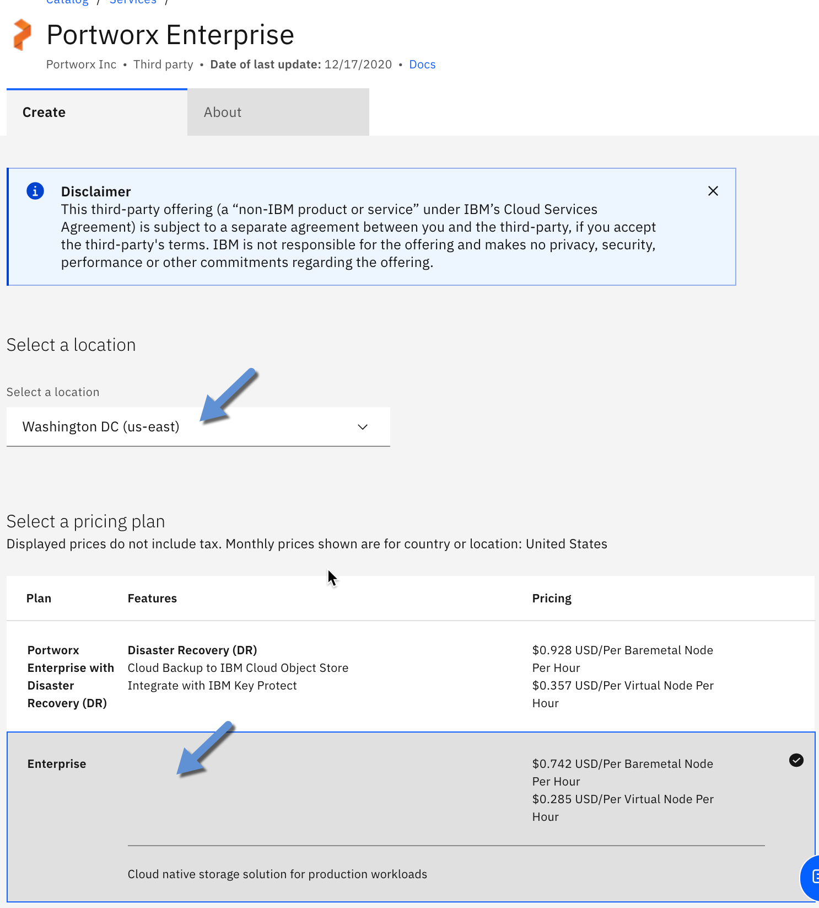 For pricing plan, choose the Enterprise plan.
For setting, start by giving your portworx instance a meaningful name such as Portworx Enterprise-satellite and choose the same resource group you have been using for all your resources. Enter your cloud API key ( note: you need to enter this API key before you are able to select the cluster to install portworx in). Finally, in this section give a unique name for portworx cluster ( note this is not a kubernetes cluster but rather a portworx storage cluster that runs inside your openshift cluster ). I will use px-cluster.
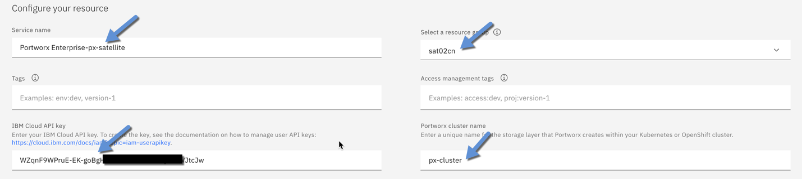
Next, we need to get our endpoint for our etcd service. In a new window, navigate back to your service credentials for etcd instance and copy the endpoint.
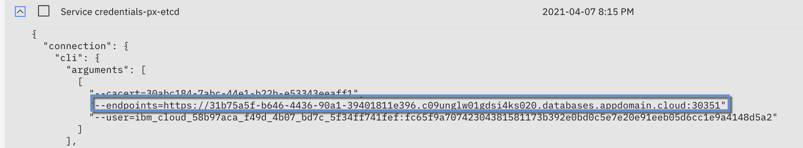
Enter the following settings:
For etcd endpoint enter etcd:
Select the satellite cluster you want to install portworx on.
For secret name, enter the name of the secret you created. If you followed my yaml example the secret name is px-etcd-certs
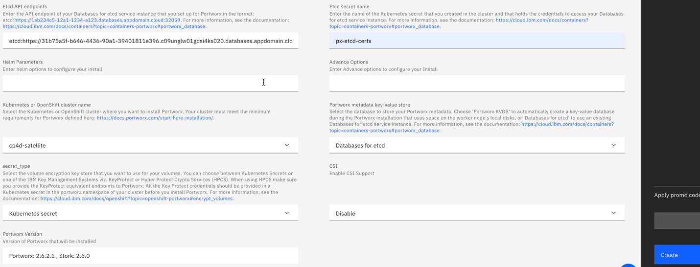
After entering all of these settings click on Create.
3.2.4 Check Portworx installation
It is always a good idea to make sure portworx has been successfully installed on your cluster before you proceed. To do so, log into your cluster through your terminal.
After logged in, change to the kube-system project.
oc project kube-system
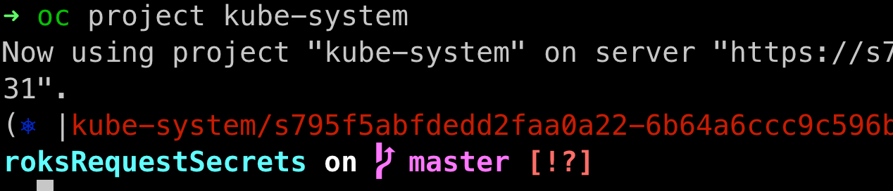
Search for portworx pods and note the name of one the pods that starts with portworx...
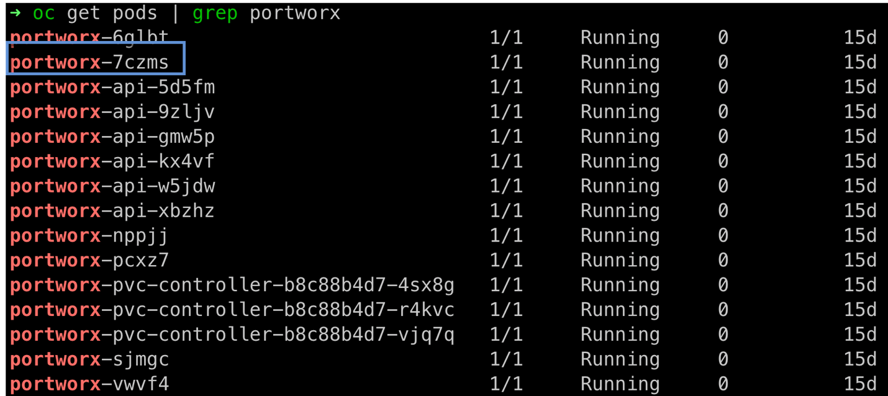
Next enter the following command substituting the name of the portworx pod you just noted.
kubectl exec portworx-7czms -it -n kube-system -- /opt/pwx/bin/pxctl status
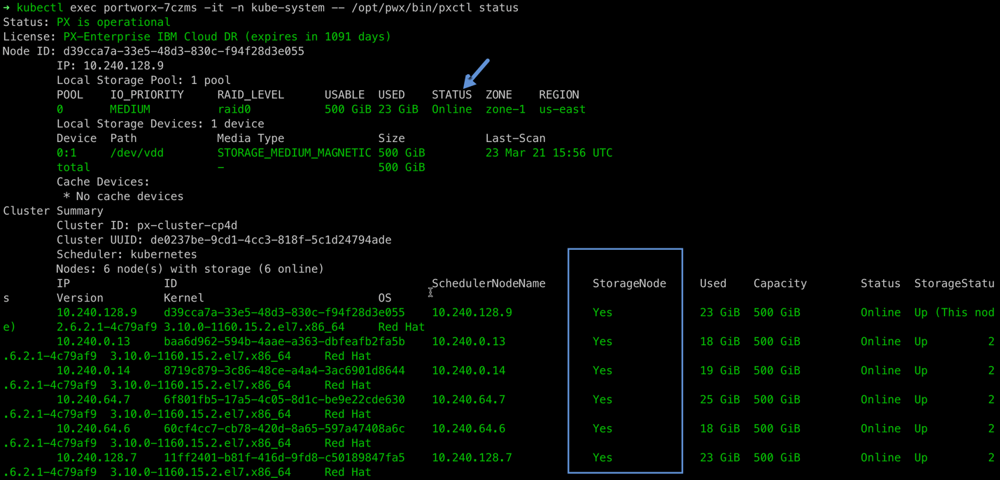
After entering that command, you should see output like the above. Check to make sure the status is online and that you have a storage node for each of your workers.
4 -- Provision Cloud Pak for Data
At this point, we have completed all the required pre-reqs to now install Cloud Pak for Data through the IBM Cloud Catalog.
To get started, from the IBM Cloud catalog, search for Cloud Pak for Data and then click on the tile.
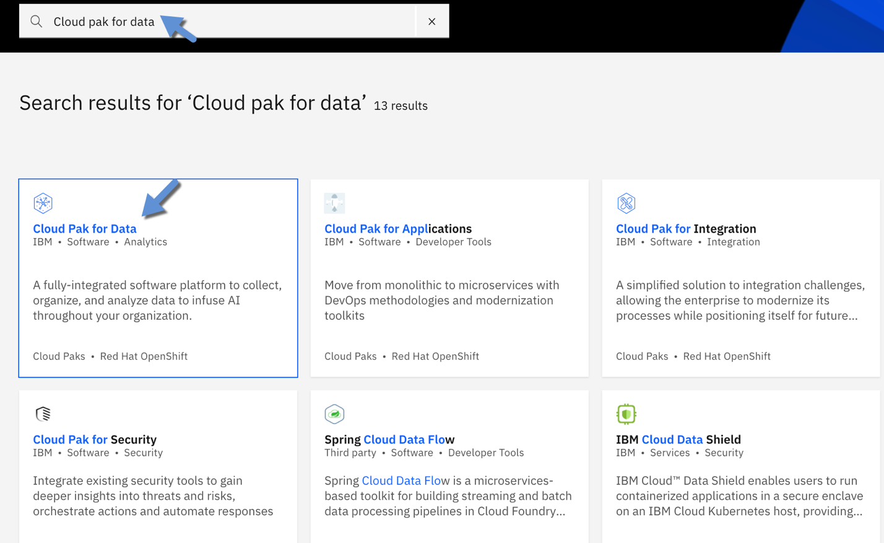
On the next screen, select the satellite cluster you want to install Cloud Pak for Data on, and create a new project for cloud pak for data, I like to use cp4d.
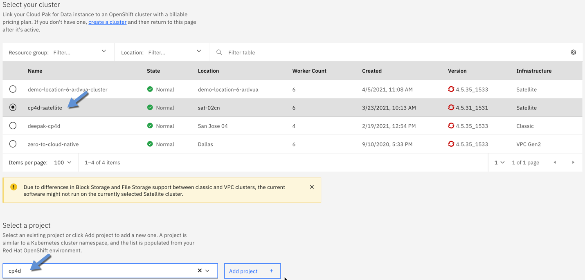
Scroll down to the preinstallation section and click on Run Script. In a couple of minutes, you will see a green box showing the preinstallation script was successfully ran.
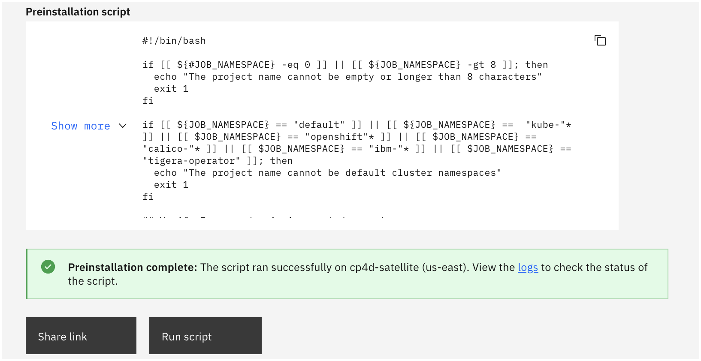
Next, we need to specify which storage class to use. As you can probably guess, we will be using portworx.
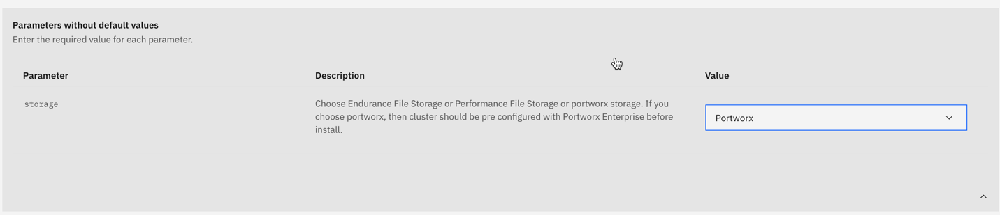
The last step we need to do is specify which components of CloudPak for Data we want to install. I will select Data Visualization and Watson Knowledge Catalog.
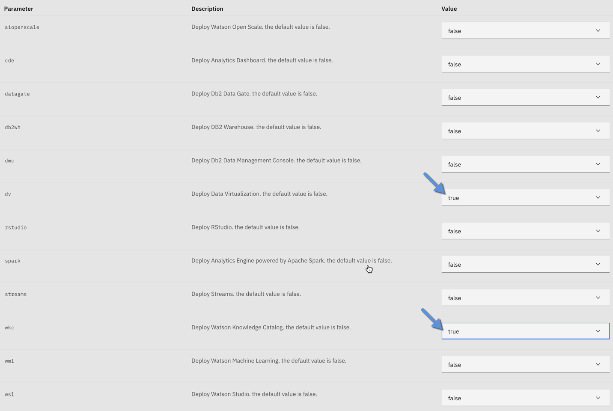
Finally, the moment has come where we can kick of the installation. Read and confirm the license agreement and click install.
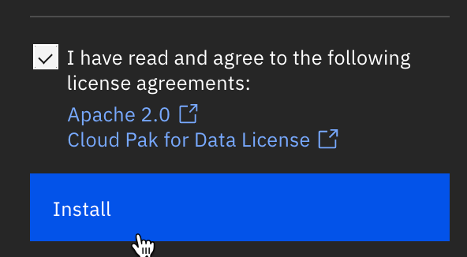
This will kick on an IBM Cloud Schematics installation process that depending on the components of Cloud Pak for Data you selected, will complete in about an hour.
5 -- Validating Cloud Pak for Data Installation
The first thing to check is did the schematics installation report that it was successful. To check this, navigate to schematics and then workspaces from the IBM Cloud console.
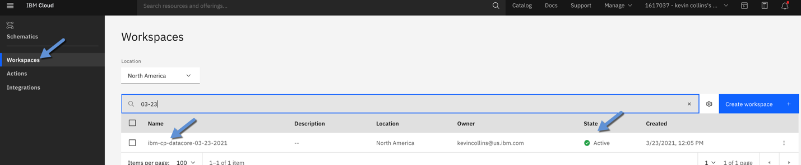
Look for a workspace named ibm-cp-datacore ... and verify the state is active with a green circle.
The last thing to check is can you launch the Cloud Pak for Data console. From the IBM Cloud console, navigate to your list of clusters and click on the satellite cluster that you installed CloudPak for Data on. Then click on Openshift web console.
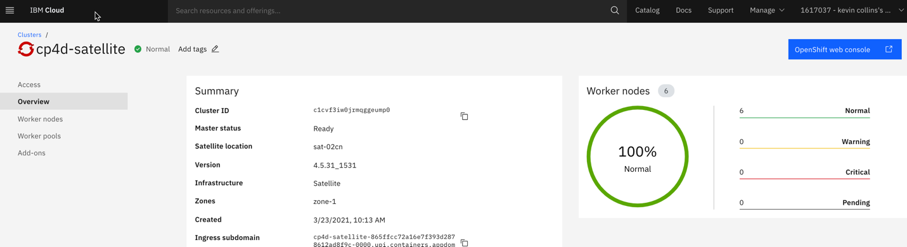
From the OpenShift console, click on Networking and then Routes. Select the CP4D project and you should see a route like below.

Click on the url in the location ... and tada ... you should see the Cloud Pak for Data console pop up.
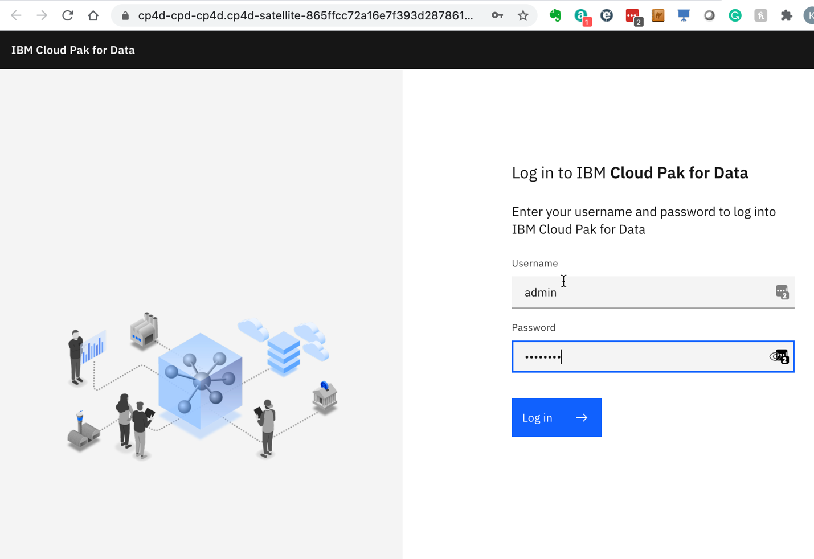
You can log into Cloud Pak for Data with the default username = admin and password=password.
Congratulations, you can now start using CloudPak for Data.
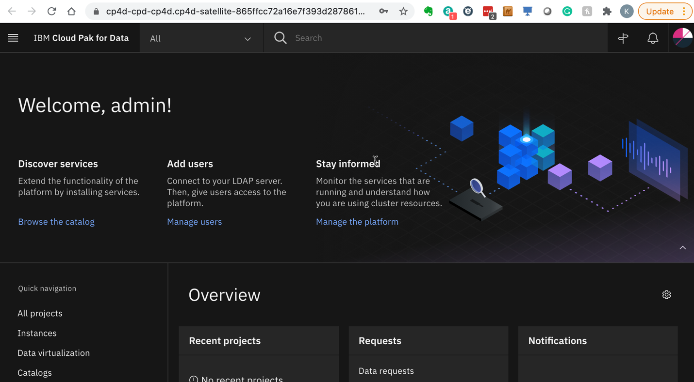